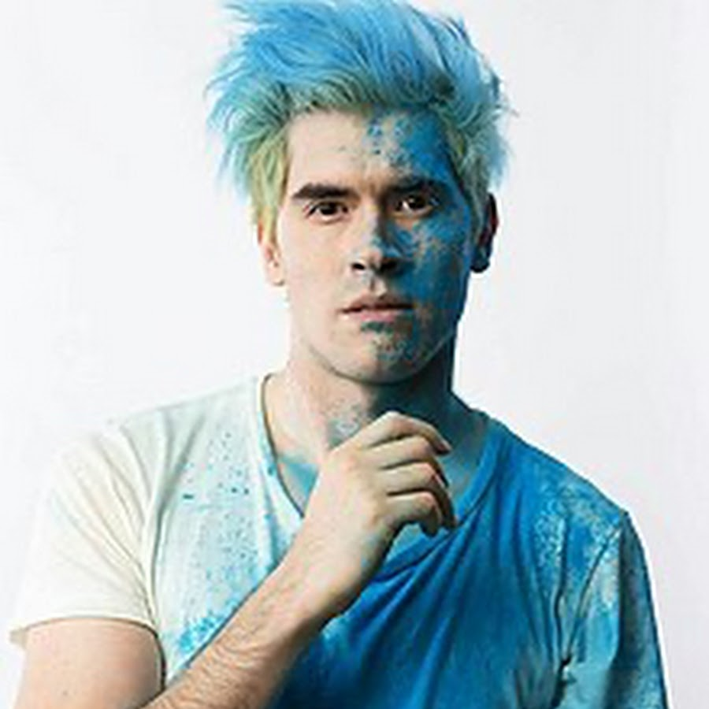

Biography
Germán Alejandro Garmendia Aranis (b. April 25, 1990, in Copiapó, Chile) is a Chilean YouTuber, singer‑songwriter, comedian, and writer who rose to fame through his YouTube channel HolaSoyGerman, where he posted humorous videos inspired by everyday life situations
Wikipedia
. In 2013, he launched his gaming‑focused channel JuegaGerman, which eventually surpassed HolaSoyGerman in both subscribers and views
. In 2016, Garmendia made history as the first YouTuber to earn two Diamond Play Buttons, one for each channel
. He has also pursued a music career with bands such as Zudex, Feeling Every Sunset, and Ancud, in addition to releasing solo work
. As an author, he has published two books: the self‑help style "#ChupaElPerro" (2016) and the novel Di Hola (2018)
Planeta de Libros
. Garmendia has been widely recognized with accolades such as MTV Millennial Awards in the Digital Icon (2014) and Master Gamer (2015) categories; he has been named among the biggest YouTube stars by The Washington Post, one of the most popular content creators by BBC, and one of the most influential figures on the internet by Time magazine
. Notably, on May 16, 2024, his JuegaGerman channel became the first Spanish‑language channel to surpass 50 million subscribers and receive YouTube’s Ruby Play Button